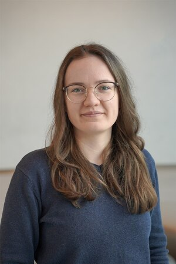

Spatial Ecology’s 2023 course
Geocomputation and Machine Learning for environmental applications
Spatial Ecology course trainers
Tushar Sethi (administrator - course organizer)
Giuseppe Amatulli (geocomputation teacher - course organizer)
Antonio Fonseca (machine learning teacher)
Francesco Lovergine (geopython teacher)
Student affiliation and their origin
Student roster
(2_1) Gabriel Ortega - Chile
Czech University of Life Sciences, Czechia
(expertise: )
(4_2) Camilo Zamora Ospina
University of Potsdam - Poland
(5_3) Talha Malik
Earth and related environmental sciences. International Environmental Doctoral School Centre for Polar Studies, University of Silesia, Katowice - Poland.
(6_4) Saverio Mancino - Italy
Department of Earth and Geo-Environmental Science University of Bari - Italy

(7_5) Anna Sblano - Italy
Department of Earth and Geo-Environmental Science University of Bari -Italy
(12_6) Luca de Guttry - Italy
Faculty of Agriculture, University of Florence - Italy
(13_7) Anastasia Andrews - Germany
Georg-August University Goettingen, Germany
(15_8) Boney Anna Joseph - India
Technical University Berlin - Germany
(16_9) Hsing-Hsuan Chen - Taiwan
Utrecht University
(17_10) Asma Mansoor - Pakistan
National University of Modern Languages Lahore - Pakistan
(18_11) Chiara Aquino - Italy
Euro-Mediterranean Center on Climate Change (CMCC) Foundation - Italy
(19_12) Issam Boukhris - Marocco
Tuscia Unversity & Euro-Mediterranean Center on Climate Change (CMCC) Foundation - Italy
(20_13) Lucy Bastin
Aston University - UK
(21_14) Marta Jemeljanova - Latvia
University of Tartu - Estonia

(23_15) Akshay Raj Manocha - India
University of Silesia, Katowice - Poland
(24_16) Komar Javanmardi - Iran
Utrecht University - The Netherlands
(25_17) Laura Jimenez - Mexico
University of Chile - Chile
(28_18) Keerat Singh - USA
University of Virginia - USA
(30_19) Taylor Maavara - Canada
University of Leeds - UK
(31_20) Catarina Midões - Portugal
Ca’ Foscari University of Venice - Italy

(33_21) Muhammad Asif
University of Basilicata - Italy
(22_22 ) Giulia Ronchetti - Italy
Ricerca sul Sistema Energetico - RSE S.p.A. - Italy
(36_23) Leonardo Mancusi - Italy
Ricerca sul Sistema Energetico - RSE S.p.A. - Italy
(24_24) Nikita Murin - Estonia
Estonian Land Board - Estonia
(38_25) Mariantonietta La Marra - Italy
University of Salento - Italy